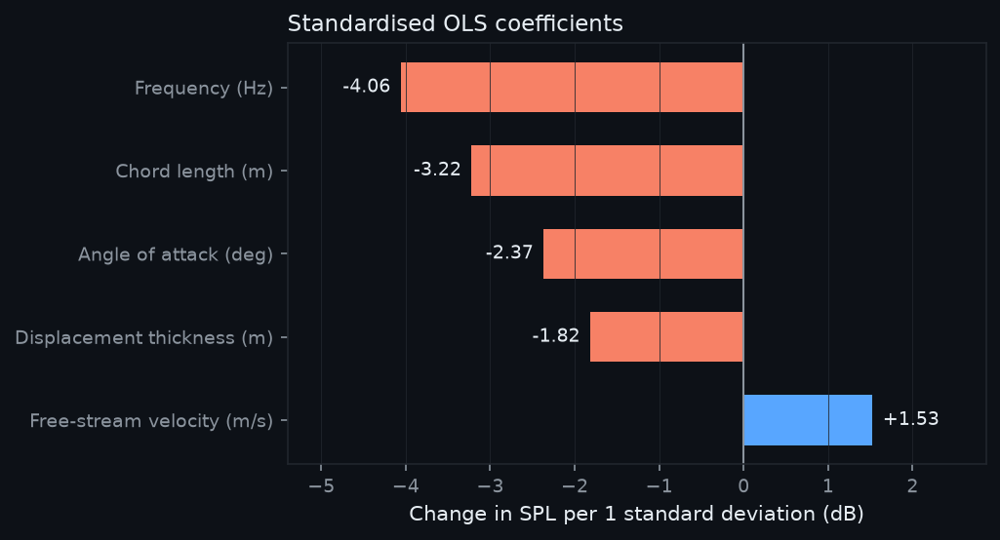
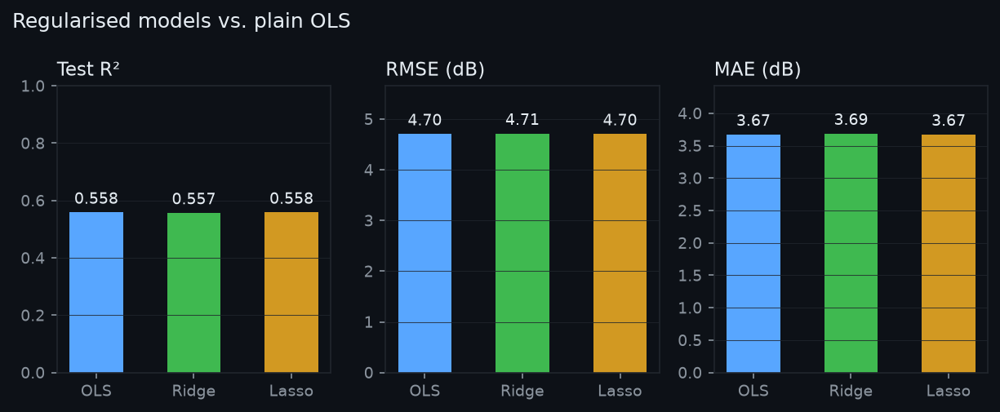
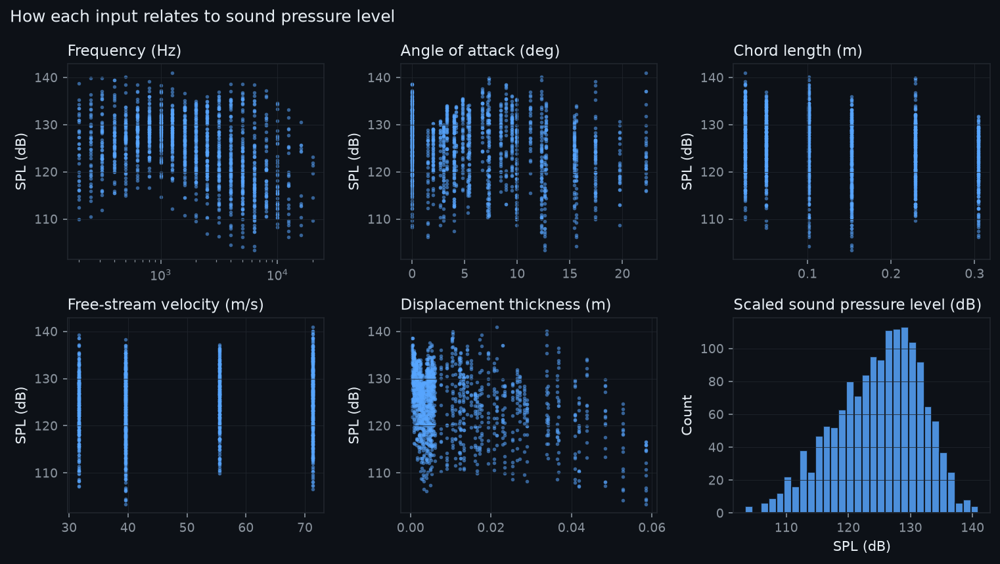
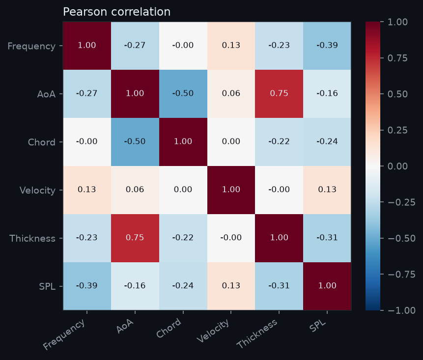
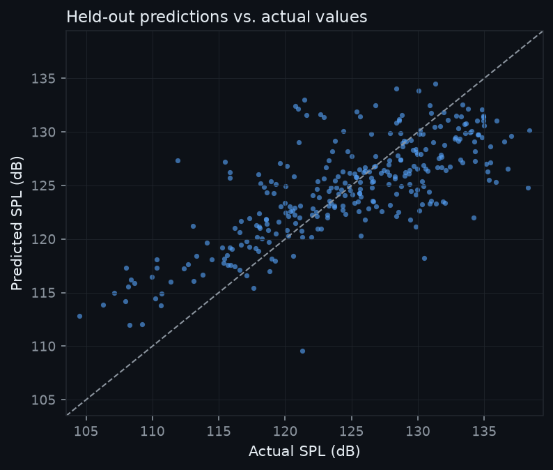
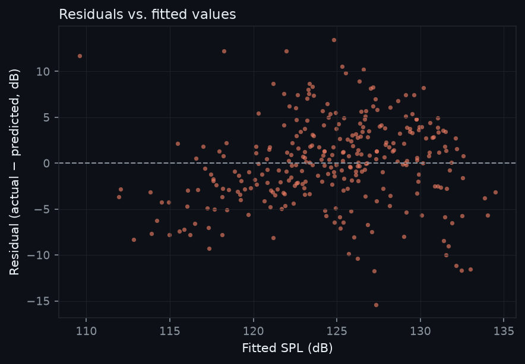
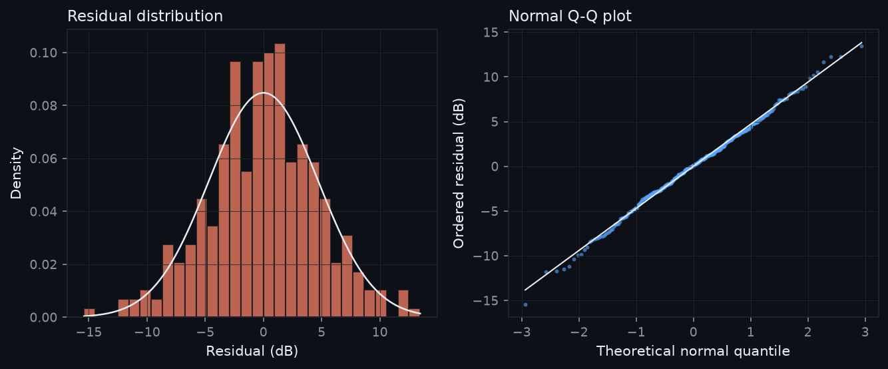

Interactive estimate
Predict scaled sound pressure level
OLS on 5 standardised features · seed 42
Flight conditions
Inputs are clamped to the observed dataset range. Moving a slider updates the estimate and the sensitivity curve instantly.
Predicted SPL
—dB
——
ŷ = β₀ + Σ βᵢ zᵢ, where zᵢ = (xᵢ − μᵢ) / σᵢ
What-if sensitivity
—
Held-out performance
Model report
80/20 split · 5-fold cross-validation
Coefficient effects

Regularisation check

Standardised coefficients
Change in SPL for a one-standard-deviation increase, holding the other inputs fixed.
| Feature | Δ SPL (dB) |
|---|
Model comparison
| Model | α | R² | RMSE | MAE |
|---|
—
Feature engineering aside
Does log(frequency) help?
—
Exploration
Signals and residuals
Generated from the cleaned dataset





Dataset hygiene
Cleaning log and preview
Validate → range-check → deduplicate
Cleaning policy
- Coerce every column to numeric; non-numeric values count as invalid.
- Range-check against broad physical bounds (for example, frequency 1–100,000 Hz and SPL 60–180 dB).
- Drop duplicates keeping the first occurrence.
- No trimming: valid extreme runs are retained to preserve the aerodynamic envelope.
Source
UCI Machine Learning Repository — Airfoil Self-Noise (ID 291). NASA wind-tunnel measurements published by Brooks, Pope and Marcolini. Distributed under CC BY 4.0.
Reproducible build: uv run airfoil-run · seed 42
First 12 cleaned rows
Scroll sideways to see all six columns.